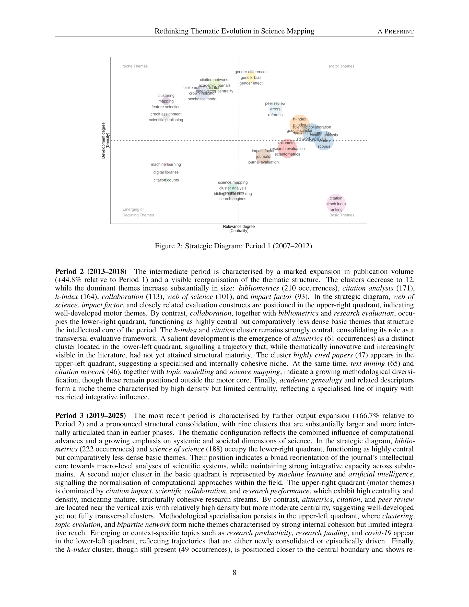

Figure 1
저자: Massimo Aria, Luca D'Aniello, Michelangelo Misuraca, Maria Spano | 날짜: 2026-03-06 | Journal: arXiv (cs.SI) | DOI: (preprint)
Figure 1
과학 지식의 종단적 주제 진화를 추적할 때, 주제 탐지와 시간적 연결을 하나의 일관된 관계적 프레임워크에서 수행할 수 있는가? 그렇다. 기존 방법은 공동어(co-word) 네트워크에서 관계적으로 주제를 탐지하면서도 시간적 연결은 단순 어휘 중첩(set-theoretic overlap)으로 추론하는 구조적 비대칭이 있었다. 본 연구는 퍼지 문서 소속(fuzzy document affiliation)과 중심성 가중 연계 강도(lineage-strength measure)를 도입하여 주제의 연속성을 관계 구조의 재구성으로 모델링하는 통합 프레임워크를 제시했다.

Figure 2
전략 다이어그램(strategic diagram)과 공동어 분석은 과학 분야의 개념 구조와 시간적 동태를 연구하는 표준 도구이다. 그러나 기존 종단 분석은 각 시기의 주제를 독립적으로 탐지한 후 키워드 중첩으로 시기 간 연결을 추론한다. 이로 인해 주제 탐지(관계적)와 계보 구축(어휘적)이 방법론적으로 단절되는 구조적 비일관성이 발생한다. 또한 경직된(crisp) 문서 할당은 학제간 연구가 증가하는 환경에서 한계가 있었다.

Figure 3

Figure 4

Figure 5
총평: 종단적 과학 매핑의 방법론적 비일관성을 이론적으로 명확히 진단하고 통합적 해결책을 제시했으나, 실증 검증의 부재가 현 단계의 주요 한계다.